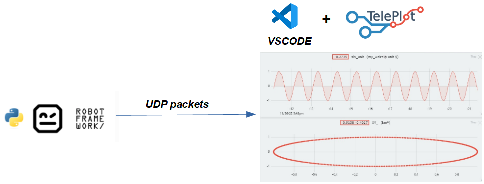

(©) Software Validation
(©) Software Validation
Documentation for the TelemetryPlot Python module
Table Of Contents
Overview
The TelemetryPlot.py Python module provides a set of services to plot telemetry data.
Telemetry data are sent over UDP Packets in a format compatible with the Teleplot for VSCode extension.
